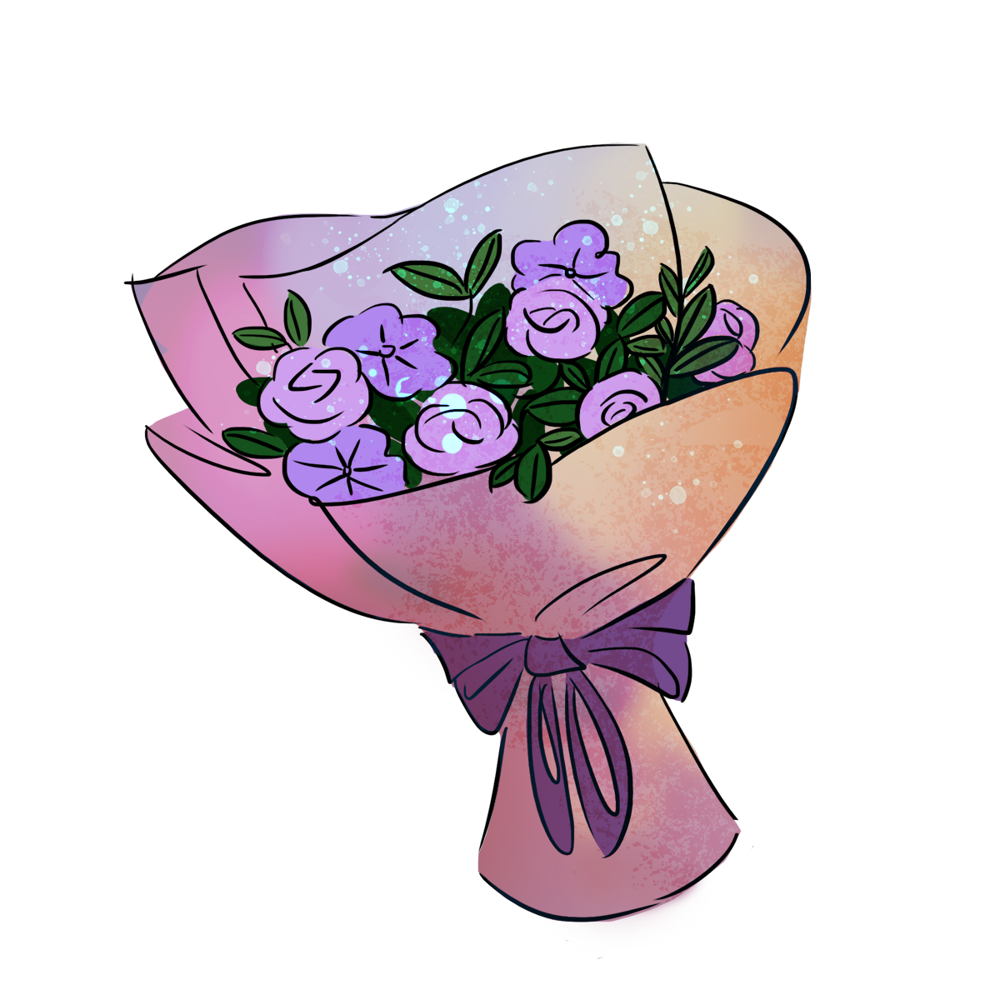
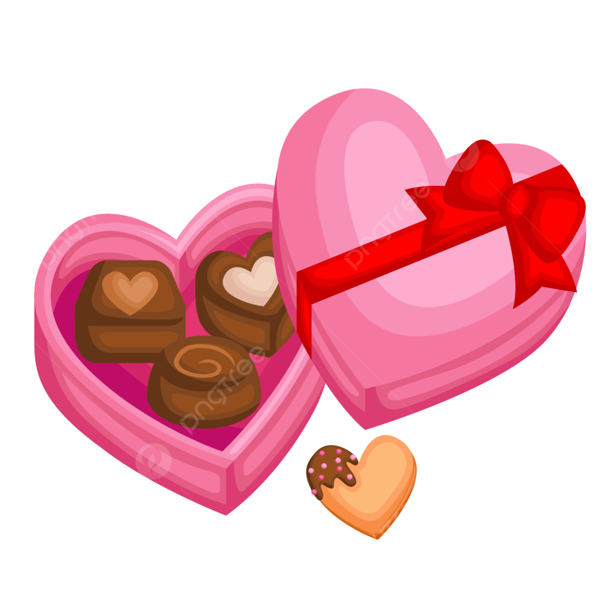

Happy Valentines day to the love of my life ^^
To: Jennifer Cardaño
----Click To Continue----
Hello lovee, I made this website for you para sa valentines day. It's like a letter tsaka long sweet message hehehhe.
Also flowers and chocolate for youuuu
 I'm so sorry love that I coudn't give you anything on the valentines this year because I'm broke(probably I shouldn't have bought that potato corner the other day) but I thought to myself, I couldn't give you nothing, that's why if I can't afford to buy anything then let me make something.
At first I thought to get help from my mother to make some paper flowers for you but I was too late.
Late ko na sya naisip...
so habang pauwi ako kanina (Febraury 13, 2026) I thought to myself, "what can I do?" and naisipan ko na "I'm a CS Major so why not I make a website for you" and then nag brainstorm na ako pauwi. Late ko na sya naisip but here's my work and I really hope you appreciate it ^ ^.
First of all I wanted to say thank you so much po sa lahat. Thank you so much po kasi you're always there for me, Thank you po kasi meron akong someone na super comfortable ako na sa tingin ko ay pwede ko nang sabihin lahat ng nasa utak ko, You always make me remember that I have a person that loves me so much and so special to her.
I love being with you bebe, I love the way you laugh, I love the way you smile, I love it when you send pics to me, I love your small eyes, your lips, your nose, your skin, I love everything about you kaya wag ka po mawawala pls hehehe.
Love na love po kita palagiii. I love you so much poo, I miss you so much poo and I hope we are always together.
Next is I wanted to look at our memories.
We first met in September 06, 2023 or exactly 892 days ever since. Subject natin nun is yung java and Sir jeff paired us three with beatrix and kinagabihan nun is chinat kita if kasali ka na ba sa gc (nagfifirst move na HAHAHAHA). Too bad wala na ako screenshot kasi di na makasearch sa messenger.
We first met in September 06, 2023 or exactly 892 days ever since. Subject natin nun is yung java and Sir jeff paired us three with beatrix and kinagabihan nun is chinat kita if kasali ka na ba sa gc (nagfifirst move na HAHAHAHA). Too bad wala na ako screenshot kasi di na makasearch sa messenger.
September 12, 2023, Tuesday, online class natin nun and I tried to chat you with the words "Naintindihan mo ba" dun sa lesson ni maam becky HAHAHAHA and then after nun lagi na tayo magkachat.
September 13, 2023, Wednesday, Subject natin nun is java and may pinagawa si sir na little activity about printing and sumakto namyday mo kaya nakapagchat ako sayo HAHAHA, nung kinagabihan rin na yun tinatanong ko kung ano IG mo but di mo sinasabi and then chineck ko yung IG ni Rona and nagpakita agad yung account mo dun HAHAHAHA kaya sabi ko nung time na yun "Mitsuketa" meaning I found it.